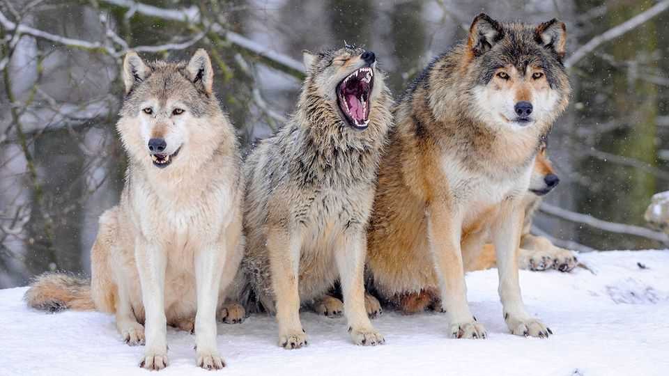

Why dogs catch yawns from their owners but not other dogs
Studies of wolves suggest the effect may be a result of domestication

Oct 29th 2026
YAWNING IS CONTAGIOUS. And not only among humans. The mimicry has been seen in chimpanzees, elephants, pigs, wolves and even, allegedly, parrots. Its purpose, however, remains unclear. Many suspect it is a form of behavioural mirroring that helps animals strengthen social bonds and enhance group cohesion. In chimpanzees, for example, contagious yawning is more common among individuals who know one another.
Dogs yawn too. But, though these wolf-descended canids often do so after their owners, yawning after other dogs is rare. It therefore looks likely that, as part of the evolutionary process which created Man’s Best Friend, the bond-forming role of yawning has been transferred from one species to another. Federica Amici of the Max Planck Institute for Evolutionary Anthropology in Leipzig, and Paolo Ciucci of La Sapienza University in Rome, teamed up to investigate by comparing the yawning behaviour of purebred wolves with that of wolf crossbreeds carrying dog DNA.
Domestication is probably central to the story. Researchers suspect that over the course of 30,000-40,000 years living with (and being bred by) people, dogs have developed traits which made them more aware of human behaviours. Along the way, this process seems to have diminished their awareness of their own kind too. But that raises the question of what happens when dog genes migrate into wolves.
Drs Amici and Ciucci, and a group of their colleagues, headed to wilderness enclosures in the mountains of Germany and Italy to investigate. There they observed 20 captive purebred wolves and 13 captive canids that were the result of wolves and dogs crossbreeding in the wild for two or three generations. The animals were in small packs of eight and 12 among the purebreeds, and three, four and six for the crossbreeds. Each wolf was closely observed for 22 15-minute sessions. Yawns were studiously noted, as was the behaviour of other animals in the enclosure.
The researchers’ findings, as reported in Animal Cognition, were striking. When purebred wolves witnessed a yawn, there was a 41% chance they followed suit within two minutes. Such copycatting was seen only 24% of the time in the crossbreeds—supporting the idea that dogs’ shift to copying human yawns rather than those of their own kind is, indeed, a genetically evolved phenomenon.
Drs Amici and Ciucci also tested what made an individual likely to trigger a contagious yawn. Intriguingly, holding positions of power within a pack did not matter. What did was how well-connected an animal was. The wolves most likely to get others yawning were the socialites of the pack—those who spent time with the widest variety of packmates—among both the purebreds and crossbreeds.
The strength of the relationship between yawner and yawn observer was also found to have no effect in triggering a follow-up yawn. That is surprising because in primates, such as chimpanzees and bonobos, the strength of a social bond, for example being close friends or family, is a crucial factor in determining whether one yawn follows another.
The loss of the contagious yawn in wild populations, as a result of interbreeding between dogs and wolves, may seem trifling. But, with her conservationist’s hat on, Dr Amici worries that it might end up having adverse consequences.
A range of other subtle behavioural changes associated with domestication, as yet unspotted by researchers, may well be migrating into wild wolf populations. This, in turn, could easily create a cascade of profound ecological repercussions. Indeed, if dog DNA ends up disrupting important elements of wolf biology—such as pack cohesion or co-ordination during hunts—it will ultimately impact the wolves’ ability to produce offspring which survive and reproduce themselves. Wolves are one of the most social species on the planet. It could prove fatal if they were to tire of one another’s company. ■